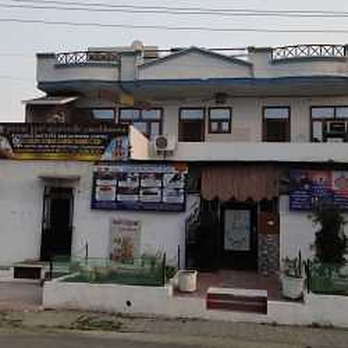
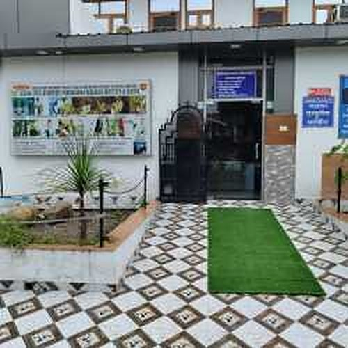
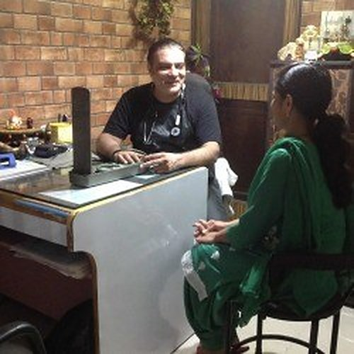
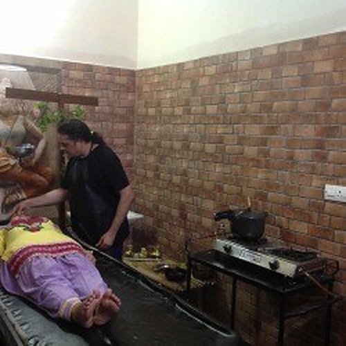
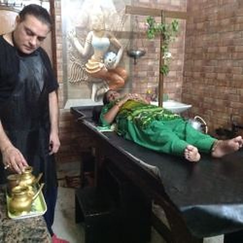
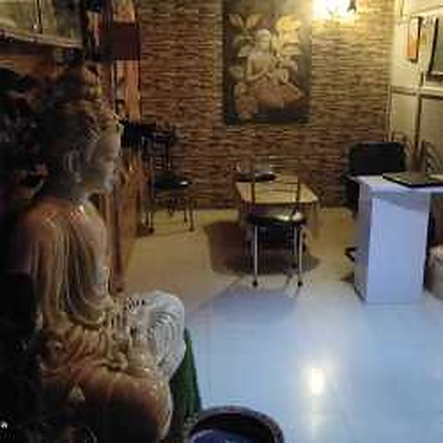
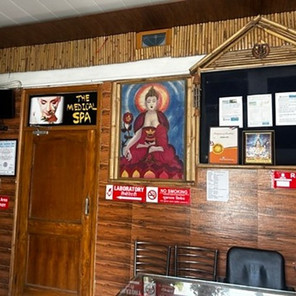
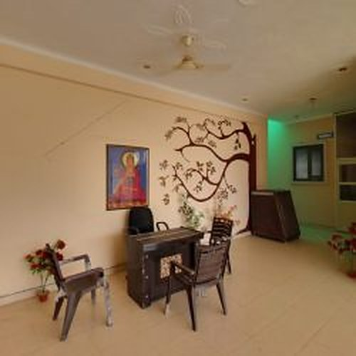

A Karnal Ayurvedic clinic built on one doctor's lifelong practice
Jeevan Jyoti Ayurveda opened in 1997 with a simple mission: a Healthy India, where Ayurvedic treatment is easier to reach.
Meet Dr. Sanjay Arora
Dr. Sanjay Arora is an Ayurvedic doctor in Karnal with 29 years of clinical practice. He holds a BAMS from Shree Krishana Ayurvedic Medical College and an MD in Alternate Medicine from Calcutta University.
His work centres on Panchakarma, pain management, weight management, skin care and lifestyle conditions. He consults in English and Hindi, and every patient meets him directly. There is no rotating panel.
Our clinic in Sector 6, Karnal
A quiet space for consultations, Panchakarma and therapy sessions. Patients from Karnal and nearby towns visit us in person, and many others consult online.
- Consultation room and therapy rooms
- Visits by appointment
Inside our clinic
A look at the consultation room, therapy rooms and waiting area in Sector 6, Karnal.








Photos from an awards event. Award: India, 2017, presented by former cricketer Kapil Dev.
Twenty-nine years, one clinic
The milestones that shaped how we practise today.
Graduates with a BAMS and begins practice. Jeevan Jyoti Ayurveda is founded in Karnal.
Completes an MD in Alternate Medicine from Calcutta University.
Receives an award in India, presented by former cricketer Kapil Dev.
Builds a practice around Panchakarma, pain care, weight management and skin care, and begins training others.
Sees patients in Sector 6, Karnal, and online across India. Rated 4.8 out of 5 by 162 people on Justdial.
How we practise
Root cause first
We ask why the problem began: digestion, routine, stress, season. Then we plan, instead of only easing the complaint.
Honest about limits
Ayurveda supports many conditions, and some need a specialist. We say so, and we never ask you to stop your medicines.
Care, not products
We do not sell products. You pay for the doctor's time, the therapy and the training. That keeps advice free of any sales push.
Talk to Dr. Arora
Share your concern and we will suggest the right consultation.